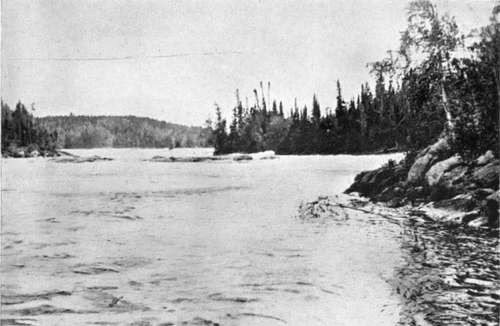

Chapter IV. On The Great Churchill River
Description
This section is from the book "Wild Life In Canada", by Angus Buchanan. Also available from Amazon: Wild Life in Canada.
Chapter IV. On The Great Churchill River
It is difficult to measure the distances one travels in passing through new country, so one seldom attempts it. When the question arises of travel about to be undertaken, or that has been accomplished, one falls back, as a rule, on what maps one possesses to scale off as best one can on a minute scale the straight distances as they are there shown. But such map measurements are at best but rudely approximate, for seldom indeed can one follow a land or water trail directly from point to point, as one assumes the course on the map. Indeed, if one surveyed and laid on paper the actual course of a primitive canoe 1 in navigating a lake, while keeping land in view and avoiding the unsheltered open lake on which it would spell death to be caught in one of those rapid rising storms of wind so common to the country, one would be astonished at the line that would zigzag and curve in its progress towards its objective, for it would in all probability take along shores of jutting headlands and through bewildering groups of island, that ever interrupt and change the route of travel; and add many hours' labour to the patient voyageur. Over land it is the same ; one works forward to a distant objective, for ever on the look-out to avoid the rougher going-thick undergrowth, swamps, muskegs, and such natural obstacles- and endeavouring to obtain the most comfortable and progressive route that the local conditions of the country offer.
1 I speak of inland waters that have grown old in their own deep solitude, where stout power-driven sailing-craft are unknown of the kind that could surge ahead through all winds and currents and on any course, aided by chart and ship's compass.
Gateways Of Magnificent River Between The Lake Expansions
Maps show the distance that I have canoed on the Great Churchill River-or "The English River " as it is locally called-from Ile a la Crosse Lake eastward to its junction with Reindeer River, to approximate 276 miles; while beyond the point of my departure from it it continues easterly another 540 miles before it empties into the sea in Hudson Bay. This is sufficient to make clear that it is a mighty river in length, as it is also mighty in breadth and volume of water.
Throughout its course the Churchill River is an extraordinary series of wide lake expansions linked together by gateways and glens of magnificent river where waters gather in indrawing volume to enter, and hurry, and tumble, and roar in their wild escaping onward, ever onward to the next lake, and the next, in their incessant, time-set journey to the sea.
On the section of the river on which I travelled there were no fewer than sixteen large and beautiful lakes, ennobled by solitude, rich in the undefined and the mysterious of the Unknown : each resembling the other in that they were gems inset in the one type of fair green forest country indigenous to that latitude; each different in that the aspect to the eye was ever a changing scene of fresh beauty and of fresh and gratifying originality. One never grew tired nor complained of monotony. Stimulated by beauty, rather was one incited almost to hurry from one fair picture to another, seeking what lay hidden beyond the next river-bend, or the next island, and when that also was revealed to wish in passing, and in the fulness of praise and satisfaction, that the best of one's friends in the world could be there also to share such wealth of wonderful scenes. It was much too fine, it seemed, to be revealed to just an audience of one.
Those lakes on the route occupied, approximately, 157 miles of the total distance, so that considerably less than half of my journey on the Churchill was on actual river.
In the manner of our going I will trace the course of the Churchill River to the mouth of Reindeer River.
Our solitary canoe, containing my able river-man at the stern-paddle and myself at the bow-paddle, entered the Churchill River from the north end of lie a la Crosse Lake. After passing down a short, narrow stream of rapid water, we entered and traversed Shagwenaw Lake-a lake which lies almost north and south. The north shore, with forest to the water's edge, was not far distant on our left, but on our right, away out south as far as eye could see, stretched a beautiful sheet of water interspersed with such a confusion of wooded islands as might well perplex the voyageur should he be so unfortunate as to be doubtful of direction. It was an invigorating day in early June; cool, almost cold. Bright sunlight lit up the full deep green of the peak-topped forests of spruce and pine and glinted along the bleached, disfigured trunks of storm-wrecked, long-dead trees, uprooted and thrown down here and there at the forest edge in angular disorder. Broad earth and broad water were beautiful: so also the heavens, beyond Space of remarkable atmospheric clearness-grey islands of cloud lying low along the northern horizon, a few faint white puffs and shallows to the east, and to the south a heavy pillowed gathering of white and grey clouds, sun-touched on their bankings with the south-east morning sun-overhead a great wide dome of clearest, softest blue.
Without difficulty we found the outlet from Shagwenaw Lake and entered a long stretch of river, wide and deep, and, for the greater part, gently flowing. During the afternoon two rapids were encountered : the first, not having excessive fall and having a feasible-looking course down the edge of the rough centre volume of water, we attempted to navigate, and successfully ran, after first going above, and walking down on the rocks, to make a critical examination of the rapid, for both of us were complete strangers to the river and had not the almost essential native advantage of knowing where lay each ugly water-covered rock and disconcerting whirlpool. The second rapid on examination offered no canoe passage, so we portaged the canoe and kit overland, and camped for the night at the lower end of the portage path, which was but a faint, almost invisible passage down the forested shore, used once a year, perhaps, in this thinly populated, almost depopulated land, by some three dozen Indians journeying to the rendezvous of the official Treaty Party at He a la Crosse to draw Treaty money, and hold a big powwow.
Continue to:
- prev: Seeking The Sandhill Crane. Continued
- Table of Contents
- next: On The Great Churchill River. Part 2